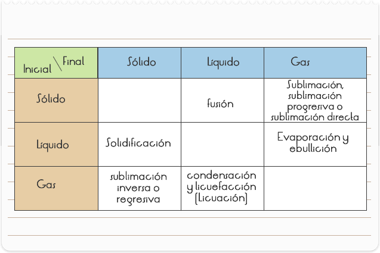
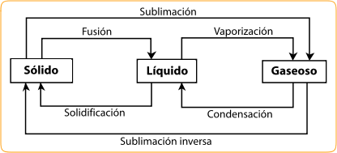
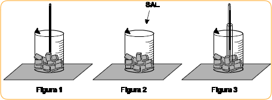
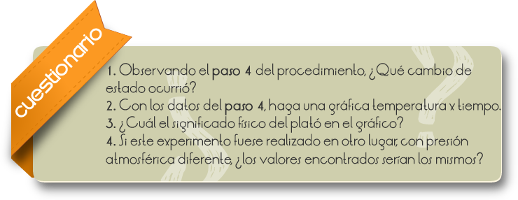

Introducción
En Física y Química se denomina cambio de estado a la evolución de la materia entre varios estados de agregación sin que ocurra un cambio en su composición. Los tres estados básicos son el sólido, el líquido y el gaseoso.
La siguiente tabla indica cómo se denominan los cambios de estado:

También se puede ver claramente con el siguiente gráfico:

Mostrar al alumno lo que ocurre con la temperatura de un cuerpo en cambio de estado.
Observación: el agua pura tiene su temperatura de fusión a 1 atm, en 0°C. Cuando agregamos la sal esa temperatura disminuye, así se puede mantener el hielo por más tiempo.
El profesor puede comentar que eso es muy usado en fiestas, donde se coloca el hielo en grandes cajas de agua, mezclando la sal para mantenerlo por más tiempo.
1. Quiebre los cubos de hielo envueltos en el paño, golpeándolos con el martillo. Eche el hielo picado a un vaso de precipitado, lea la temperatura y anote (Figura1)
2. Retire el termómetro y agregue la sal de cocina, mezcle e introduzca el termómetro (Figura2). Observe por algunos minutos la columna de mercurio en el termómetro y anote la temperatura final de equilibrio.
3. Introduzca un tubo de ensayo en la mezcla. Coloque el bulbo del termómetro dentro del tubo de ensayo a ½ centímetro del fondo (Figura 3). Con la jeringa, agregue agua al tubo de ensayo suficiente para cubrir el bulbo del termómetro. Anote la hora y la temperatura inicial del proceso.
4. Mueva suavemente el agua, con el propio termómetro, en el interior del tubo de ensayo, anote de 30 en 30 segundos, la temperatura del agua. Compruebe si hay cambio de estado.


Comentarios
En el cambio de estado no ocurre variación de temperatura, el calor cedido o retirado del cuerpo es llamado de calor latente, al plotarse, un gráfico de temperatura por calor cambiado de un cuerpo, que está a priori en, estado sólido, el plató (curva) presentará en un momento una recta paralela al eje del calor. Allí ocurre el cambio de estado.
Si un sólido es calentado sobre presión constante, el mismo sufre fusión, a una temperatura característica Tf, la cual permanece constante durante el proceso.
Durante la fusión, coexisten los estados sólidos y líquidos del material.
Cuando un líquido es resfriado sobre presión constante, el sufre solidificación en la misma temperatura, en la cual, el sólido se funde (sobre misma presión). Durante la solidificación, la temperatura permanece constante.
Tanto la temperatura de fusión como la de solidificación, dependen de la presión, a la que, la sustancia está sometida. Sin embargo, la influencia de la presión sobre el punto de fusión, no se da del mismo modo para todas las substancias, pues algunas substancias se dilatan durante la fusión y otras se contraen.